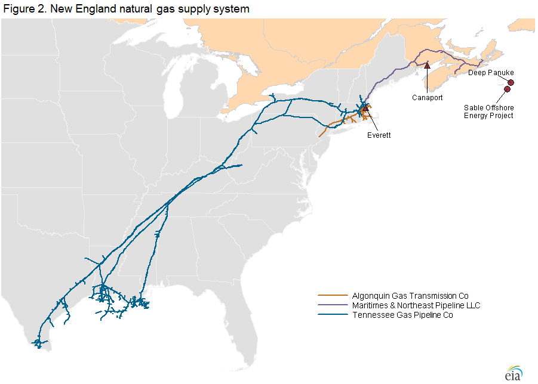

Natural Gas
Market Digest: Natural Gas (2013-2014)
High prices show stresses in New England natural gas delivery system
Released: February 7, 2014
Abstract. Since 2012, limited supply from the Canaport and Everett liquefied natural gas (LNG) terminals coupled with congestion on the Tennessee and Algonquin pipelines has led to winter natural gas price spikes in New England. The problem continued in the winter of 2013-14, as indicated by New England's forward basis for January 2014 reaching $17.41. Pipeline expansions could ease price spikes, but their cost-effectiveness, including their ultimate cost to consumers, remains a challenge. This article reviews possible alternatives.
During the past two winters, New England natural gas winter prices have risen significantly. The average bidweek natural gas price reached a high of $14.52 per million British thermal units (MMBtu) for December 2013 and more than $20/MMBtu for January 2014. The January New England forward basis1, reflecting the relationship between market conditions at a specified regional hub and those at Louisiana's Henry Hub, settled at $17.41,2 and the forward basis curves indicate a market expectation of a record-high winter basis (Figure 1). The high winter prices in New England suggest a natural gas delivery system that is stretched significantly.3
{kind=link}
New England receives natural gas from several sources.  Most natural gas delivered into New England flows through the Tennessee Gas Pipeline (TGP) and Algonquin Gas Transmission pipeline (AGT), both of which flow gas into the region from the south. Massachusetts's Everett liquefied natural gas (LNG) terminal also supplies natural gas to the region and is connected with the AGT and TGP pipelines.4 Canada's Canaport LNG import terminal also sends natural gas into the region through the Maritimes & Northeast (M&N) pipeline, which has the option of delivering natural gas to New England from the production fields in the Sable Offshore Energy Project and Deep Panuke in Nova Scotia, Canada (Figure 2).
{kind=link}
The TGP and AGT pipelines have a combined transport capacity of about 3.5 billion cubic feet (Bcf) per day delivered into New England, including gas from domestic production and storage withdrawal, Canadian production, and imported LNG. Although transport capacity is greater than average January consumption (Figure 3), peak-demand days determine the stress on the delivery system.
{kind=link}
In the winter of 2012-13, LNG supply from Canaport via M&N and from Everett declined (Figure 4), and as a result, the other primary sources of supply, the AGT and TGP pipelines, were almost fully utilized and thus stressed in many days of the winter (Figure 5). This situation has been repeated as the winter of 2013-14 reaches a midpoint, and the forward basis continues to spike.
{kind=link}
{kind=link}
Some of the natural gas from M&N and Everett is delivered to New England through their interconnections to TGP and AGT. In addition, Everett delivers up to 0.7 Bcf per day directly to the 1,951-megawatt (MW) Mystic power plant, the National Grid utility company, and LNG users. New England also receives natural gas directly from M&N, Iroquois, and the Pacific Northern Gas pipelines in addition to the delivery points on TGP and AGT.
International natural gas and LNG markets. The reduction in LNG imports into New England is a consequence of the growth in U.S. shale gas production since 2010, which has contributed to a reduction in U.S. natural gas market prices relative to those in other world markets. The price spread between the U.S. benchmark price at Henry Hub and the United Kingdom (U.K.) benchmark price at National Balancing Points widened to $6.91/MMBtu in 2013 from $0.83/MMBtu in 2009 (Figure 6).
{kind=link}
The growing price spread between U.S. and global markets led to the reduction in LNG imported and then sent from the Canaport (through M&N) and Everett LNG terminals (through TGP and AGT), and contributed to the upward price pressure in the New England market.
Effect of limited peak supply on New England prices. The price effect of a decline in peak supply is evident when comparing January 2013 with January 2012. Both months had several days when the market called for supply close to peak capacity of 3.5 Bcf/day from TGP and AGT. The basis in January 2013, however, rose substantially higher than the basis in January 2012, reaching over $30/MMBtu on January 26, 2013, while remaining under $9/MMBtu the entire month of January 2012 (Figure 7).
{kind=link}
Increasing electric power sector natural gas use in New England. Relatively lower natural gas prices in the United States, compared with the United Kingdom, not only led to declines in LNG imports but contributed to increased use of natural gas in power generation. In New England, natural gas use for electricity generation made up about a third of the region's natural gas consumption in 2013, averaging 1.2 Bcf per day. Since 2010, a trend of less expensive natural gas relative to other fuels has led to an increase in the share of total electricity generated by natural gas in the region (Figure 8).
{kind=link}
This price pattern has increased the use of natural gas-fired capacity in the region and contributed to generally lower wholesale power prices. The lower wholesale power prices along with some environmental regulations at the regional and national levels have contributed to planned retirements of some large electric power plants in New England that use other fuels (Figure 9), including Vermont Yankee (a 620-MW nuclear generator with a planned retirement date of December 2014) and Salem Harbor (a 744-MW coal- and oil-fired power plant with a planned retirement date of June 2014). The planned retirement of the Vermont Yankee and Salem Harbor power plants could result in as much as 0.11 Bcf per day of additional natural gas demand in the power sector during winter months, if typical demand patterns hold and all the output of these units is replaced by natural gas generation.
{kind=link}
Increased pipeline utilization rates on peak days create physical stress on the natural gas transport system, which leads to reliability concerns for electric power sector deliveries. These deliverability concerns led the Independent System Operator of New England (ISO-NE), the electric grid operator for the region, to create a special winter reliability program for this winter. The program includes:
- Demand-response program
- Incentives to ensure oil-fired generators increase their fuel inventories
- Payments to dual-fueled units for testing their capacity to use oil
- Some changes to the market-monitoring procedures aimed at increasing the flexibility of dual-fueled units
The deliverability problems cited in the ISO-NE winter reliability program are a key reason to have oil-fired backup and dual-fired unit capacity in the region.
Potential solutions
There are a number of potential solutions to lessen the impact of limited peak supply at peak demand times.
Pipeline expansion to New England. With rising natural gas output from the Marcellus production field, pipeline expansion to move this gas to New England is one option for alleviating market stress. The key is to deliver more natural gas to Massachusetts, especially the Boston area, because it is the largest market in New England. Major energy infrastructure projects in metropolitan areas such as Boston and New York City, however, are capital intensive. Regulated pipeline companies typically seek financial assurance by signing long-term firm transport capacity contracts with shippers. Companies that sign firm capacity contracts will benefit financially when spreads widen substantially in New England. On the other hand, firms signing these contracts also assume the financial liability.
In 2011, Spectra Energy (operator of the Algonquin pipeline) proposed the Algonquin Incremental Market (AIM) Project to expand its citygate capacity by a nonbinding nomination of 1 Bcf/day. In December 2013, the proposed capacity expansion was 0.33 Bcf/day, with the target completion in November 2016.5 The size of the pipeline capacity expansion was reduced 65% from the original proposal because of lack of interest in signing up for long-term firm transport capacity contracts.6 So far, only regulated utilities, including UIL Holdings, Northeast Utilities, National Grid, and NiSource, have shown a willingness to absorb the financial cost embedded in the long-term firm contracts.7 In addition to Spectra, Tennessee Pipeline proposed an expansion project of up to 1.2 Bcf/day into the Boston area, with expected completion in 2018.8
In general, public utility commissions (PUCs) require utilities to seek approval for signing long-term contracts and the rate hikes required to pay for them. The reduction in the proposed expansion capacity of the AIM project may indicate hesitation by and their regulators. Pipeline rates approved by FERC and utility rates approved by PUCs need to be consistent for success in pipeline expansion.
U.S. LNG. Utilities in New England might also enhance winter supply reliability by investing directly in proposed U.S. LNG liquefaction plants and receiving occasional LNG cargoes as a stipulation of their investment. It may be possible that investing a relatively small amount of capital could provide access to this source of swing supply during periods of high winter demand in New England.
Physical peaking option contracts. To mitigate the market risk of such high-price patterns, one effective instrument is a physical peaking option to manage the physical supply and financial price risk on peak demand days.9 The contract buyer purchases a fixed quantity of gas from a peak supplier, such as an LNG storage facility, for a specified open window of time, price, and number of days on which the buyer can call for delivery of the gas at the agreed price and volume. The buyer pays the option premium to the LNG facility for this right. Volumes tend to be small, as the right to buy the gas would only be exercised as an emergency on days of peak demand, such as a very cold day when the spot price spikes.
However, in recent years, New England has developed problems that may prevent the economic use of an LNG-based peaking option:
- The increased frequency of price spikes has made options more expensive.
- Supplies from Canada's eastern offshore production areas declined, making the overall premium more expensive.
- Because LNG is traded globally, higher international LNG prices have increased competitive buying pressure for the gas.
With the increase in the forward basis for the winter of 2013-14 as described above, Canaport and Everett may be able to lock in LNG supplies to New England, but the cost to consumers is higher than in recent years because of the above factors.
Fuel substitution. In periods of high natural gas prices, users could substitute less-expensive fuels if possible. Natural gas consumption by the power sector declined in January 2013 compared to January 2012 (Figure 10), encouraged in part by higher natural gas spot prices. When natural gas prices hit a historic low in the summer of 2012, it was widely reported that many power generating units switched from eastern coal to natural gas. More importantly, during the peak-demand season when natural gas prices spike, power generating units tend to switch from natural gas to fuel oil. In addition to power generation, other natural gas consumers, such as universities, factories, or even residential customers, also benefit from optimizing their fuel strategy when a backup fuel is available. Regulatory restrictions and other issues, however, may limit the extent that fuel substitution can occur, which will constrain the effect of fuel switching even in periods of peak demand.
{kind=link}
Demand curtailment. Utilities in both New England and New York City are able to offer interruptible services to customers with dual-fuel capability. New York City has a widely used feature in which utilities offer retail customers firm services and interruptible services. Natural gas consumers with dual-fuel backup have an option to buy interruptible natural gas services at a substantial discount. Consumers with interruptible services can choose to switch from natural gas if another fuel is less expensive. If market activities fail to reduce peak demand below available supply, however, utilities make curtailment calls to ensure supply reliability, which require natural gas consumers with interruptible services to switch from natural gas to another fuel regardless of costs. Customers who fail to comply will incur monetary penalties.10
The retail curtailment mandate lowers peak demand, which helps reduce price spikes during high-demand periods. When curtailment is called, customers may have to pay higher prices to switch from natural gas to alternative fuels, but they may still be better off than paying higher premiums up front to purchase firm services.
Price comparison between New England and New York City. Both Boston and New York City had natural gas price spikes in the winter of 2012-13 (Figure 11). So far in the winter of 2013-14, however, natural gas price spikes in New York City remained less frequent than in Boston, although on the coldest days the spot prices tend to be higher in New York City than in Boston. Natural gas pipeline expansion into the New York City area may be providing a buffer against the frequency of price spikes this winter. Encouraged by the proximity to Marcellus natural gas production and rising baseload consumption, pipeline capacity increased, and this likely contributed to the mitigation of price spikes in the New York City area. In addition, effective retail demand curtailment in New York City provides peak supply reliability and, in turn, reduces price volatility.
{kind=link}
The forward basis markets have also shown widening differentials (Figure 12). At Transco Zone 6 New York, the January 2013 forward basis settled around $3/MMBtu, while the Algonquin Citygate January 2013 forward basis reached more than $6/MMBtu. The deviation widened rapidly in 2013. The January 2014 forward basis at Transco Zone 6 New York settled at $4.89/MMBtu, but the Algonquin Citygate forward basis for the same contract settled at $17.41/MMBtu. The 2015 basis differential also remains wide, indicating the market expectation that New England's peak supply problems will continue into the winter of 2014-15.
{kind=link}
Conclusion. Limited peak supply contributed to substantial increases in New England natural gas prices and basis on high-demand days this winter and last winter. New York City reduced spikes in prices and basis by adding pipeline capacity and by using retail demand curtailment, solutions that could help New England as well. Companies have proposed pipeline expansion, but getting the financial commitments to move forward has been difficult because the additional capacity may only be necessary for short periods during the year. Pipeline expansion may become more viable if baseload consumption of natural gas to generate electricity continues to increase. The high January 2015 forward basis for Boston indicates that market participants do not expect a resolution to these peak supply issues before next winter.
- In the natural gas industry, basis is the difference between a natural gas price at a given location and the benchmark Henry Hub (Louisiana) price; a forward price of a given forward month is a contract price for delivering a specified amount of natural gas in the given month. A forward basis of a given location is the difference between the forward prices at the given location and at Henry Hub. A spot price is a contract price for delivering natural gas on the next day. A spot basis at a given location is the difference between spot prices at the given location and Henry Hub.
- This specific basis was at the Algonquin Citygate.
- See also Constraints in New England likely to affect regional energy prices, Market Alerts, and the Market Prices and Uncertainty Report.
- Everett also provides LNG directly to the Mystic Power Plant and the National Grid utility company. In addition, Everett is capable of delivering LNG directly to utilities or even end users by truck at the capacity of 0.1 Bcf/day. Two additional regasification terminals, offshore buoy-systems Neptune and Northeast Gateway, both near Everett, are usually inactive.
- Algonquin Incremental Market (AIM) Project, Spectra Energy, http://www.spectraenergy.com/Operations/New-Projects-and-Our-Process/New-Projects-in-US/Algonquin-Incremental-Market-AIM-Project/ and DEEP Electric IRP Gas Stakeholder Meeting, Hartford, CT, September 20, 2011, Spectra Energy, http://www.ct.gov/deep/lib/deep/energy/irp/naturalgas/irp_2012_stakeholdermtg_naturalgas_spectraenergy_092011.pdf
- Utilities seek boost in region's natural gas, the Boston Globe, November 5, 2013, http://www.bostonglobe.com/business/2013/11/05/agreements-with-utilities-moving-pipeline-expansion-forward/8uyv2tJ9dqhXReB3BxgkYN/story.html
- NGA Pre-Winter Briefing, Spectra Energy, November 6, 2013, http://www.northeastgas.org/pdf/m_dirrane_spectra_outlook.pdf
- Northeast Gas Association Pre-Winter Briefing 2012 / 2013, Kinder-Morgan, December 3, 2012, www.northeastgas.org/pdf/d_skipworth.pdf
- Imported LNG: a Reliable Peaking Option for New England, Repsol Presentation, April 30, 2013, www.northeastgas.org/pdf/v_morrissette_repsol.pdf‎ and GDF Suez Gas NA, GDF Suez Presentation, December 3, 2012, www.northeastgas.org/pdf/g_whitney.pdf
- OFO and Curtailment, SCANA Energy Marketing, http://www.scanaenergymarketing.com/SCANA.ESS.Templates/Content/Content100.aspx?NRMODE=Published&NRNODEGUID=%7bF78CDC8B-8C39-40A8-961E-D84EB1183F1A%7d&NRORIGINALURL=%2fen%2fnatural-gas-education%2fofo-and-curtailment%2f&NRCACHEHINT=Guest#curtailment